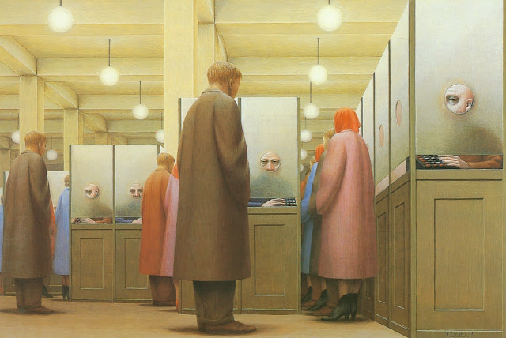

Government Bureau
(1965) a Painting by George Tooker
came
across this during a visit to the moma what stood out to me was the
uncanniness
of the people's expressions. every face inside the
cubicles
wear the same face, probably speaing on the alienation that occurs during work
